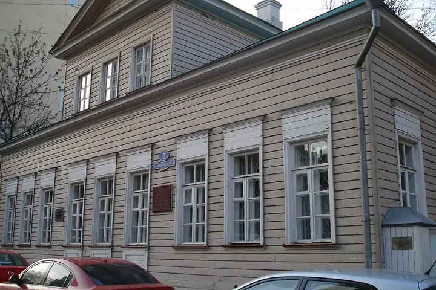

Фото: Alma Pater, CC BY-SA 3.0 · Wikimedia Commons
Музей · ЦАО
Дом-музей Лермонтова
Деревянный домик на Малой Молчановке, где жил юный Лермонтов.
- ₽ · до 1 500 ₽ на человека
- в 1 плане
Позвать сюда: Дом-музей ЛермонтоваОткрыть в каталоге: Дом-музей ЛермонтоваМаршрут до места: Дом-музей Лермонтова
Адрес и детали
- Адрес
- ул. Малая Молчановка, 2
Открыть на Яндекс Картах (в новой вкладке) - Метро
- м. Арбатская
- Округ
- Центр (ЦАО)
- Цена
- до 1 500 ₽ на человека
- Проверено
- работает — проверили в октябре 2026
Планы с этим местом 1
- Дом-музей Лермонтова · Музей · м. Арбатская
- 4 минуты пешкомThe Nappe Bistro · Бистро
Домик Лермонтова на Молчановке и бистро в старинном Скатертном переулке.
Открыть план: Арбатские переулкиПозвать сюда: Арбатские переулки
Фото: Alma Pater, CC BY-SA 3.0 · Wikimedia Commons

Похожие рядом


Что ещё рядом

Как позвать
- Выбери план, место или событие — в карточке адрес, цены и маршрут в Яндекс Картах.
- Нажми «Позвать сюда» — соберётся приглашение-игра для свидания или голосование для компании.
- Отправь ссылку в любой мессенджер: тебе ответят, а компания отметит, куда и когда может. Бесплатно и без регистрации.